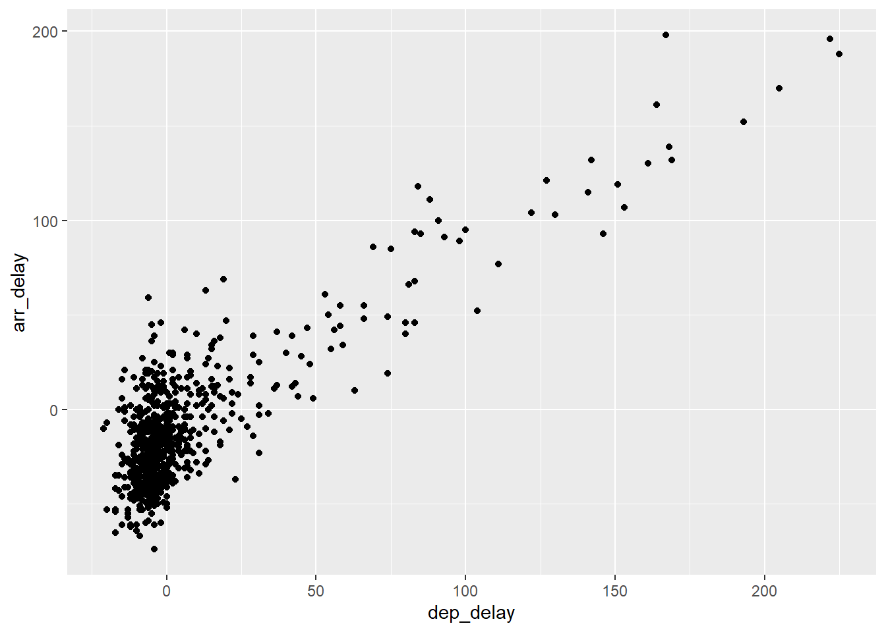

#install.packages("nycflights13")
library(tidyverse)
library(nycflights13)
#Load Tidyverse
library(tidyverse)
#load dplyr
library(dplyr)
#load ggplot2
library(ggplot2)STAT 5000 Week April 3 - 7 2023
Install NYC Flights Package
Install nycflights from Tools>Install Packages> nycflights
nycflights13 contains information about domestic flights departing from New York City (NYC)
3 main airports in 2013: Newark Liberty International (EWR), John F. Kennedy International (JFK), and LaGuardia Airport(LGA)
nycflights13 is an R Package contains five datasets saved in five dataframes as follows:
- flights: Information on all 336,776 flights
- airlines: A table matching airline names and their two-letter International Air Transport Association (IATA) airline codes (also knon as carrier codes) for 16 airline companies. For example “DL” is the two-letter code for Delta
- planes: Information about each of the 3,322 physical aircract used
- weather: Hourly meteorological data for each of the three NYC airports
- airports: Names, codes, and locations of the 1,458 domestic destinations
Load Tidyverse and nycflights13 packages
Lets work with the flights Data Frame (or Tibble - a better, well-behaved data frame in Tidyverse )
Call up the Tibble flights
flights# A tibble: 336,776 × 19
year month day dep_time sched_dep_time dep_delay arr_time sched_arr_time
<int> <int> <int> <int> <int> <dbl> <int> <int>
1 2013 1 1 517 515 2 830 819
2 2013 1 1 533 529 4 850 830
3 2013 1 1 542 540 2 923 850
4 2013 1 1 544 545 -1 1004 1022
5 2013 1 1 554 600 -6 812 837
6 2013 1 1 554 558 -4 740 728
7 2013 1 1 555 600 -5 913 854
8 2013 1 1 557 600 -3 709 723
9 2013 1 1 557 600 -3 838 846
10 2013 1 1 558 600 -2 753 745
# ℹ 336,766 more rows
# ℹ 11 more variables: arr_delay <dbl>, carrier <chr>, flight <int>,
# tailnum <chr>, origin <chr>, dest <chr>, air_time <dbl>, distance <dbl>,
# hour <dbl>, minute <dbl>, time_hour <dttm>class(flights)[1] "tbl_df" "tbl" "data.frame"Use dim to check rows and columns; use glimpse to get additional data about data types
dim(flights)[1] 336776 19glimpse(flights)Rows: 336,776
Columns: 19
$ year <int> 2013, 2013, 2013, 2013, 2013, 2013, 2013, 2013, 2013, 2…
$ month <int> 1, 1, 1, 1, 1, 1, 1, 1, 1, 1, 1, 1, 1, 1, 1, 1, 1, 1, 1…
$ day <int> 1, 1, 1, 1, 1, 1, 1, 1, 1, 1, 1, 1, 1, 1, 1, 1, 1, 1, 1…
$ dep_time <int> 517, 533, 542, 544, 554, 554, 555, 557, 557, 558, 558, …
$ sched_dep_time <int> 515, 529, 540, 545, 600, 558, 600, 600, 600, 600, 600, …
$ dep_delay <dbl> 2, 4, 2, -1, -6, -4, -5, -3, -3, -2, -2, -2, -2, -2, -1…
$ arr_time <int> 830, 850, 923, 1004, 812, 740, 913, 709, 838, 753, 849,…
$ sched_arr_time <int> 819, 830, 850, 1022, 837, 728, 854, 723, 846, 745, 851,…
$ arr_delay <dbl> 11, 20, 33, -18, -25, 12, 19, -14, -8, 8, -2, -3, 7, -1…
$ carrier <chr> "UA", "UA", "AA", "B6", "DL", "UA", "B6", "EV", "B6", "…
$ flight <int> 1545, 1714, 1141, 725, 461, 1696, 507, 5708, 79, 301, 4…
$ tailnum <chr> "N14228", "N24211", "N619AA", "N804JB", "N668DN", "N394…
$ origin <chr> "EWR", "LGA", "JFK", "JFK", "LGA", "EWR", "EWR", "LGA",…
$ dest <chr> "IAH", "IAH", "MIA", "BQN", "ATL", "ORD", "FLL", "IAD",…
$ air_time <dbl> 227, 227, 160, 183, 116, 150, 158, 53, 140, 138, 149, 1…
$ distance <dbl> 1400, 1416, 1089, 1576, 762, 719, 1065, 229, 944, 733, …
$ hour <dbl> 5, 5, 5, 5, 6, 5, 6, 6, 6, 6, 6, 6, 6, 6, 6, 5, 6, 6, 6…
$ minute <dbl> 15, 29, 40, 45, 0, 58, 0, 0, 0, 0, 0, 0, 0, 0, 0, 59, 0…
$ time_hour <dttm> 2013-01-01 05:00:00, 2013-01-01 05:00:00, 2013-01-01 0…Use view to bring up RStudio built-in data viewer
view(flights)We will use 5 key charts or plots to explore the contents of the flights data frame/tibble
- Scatterplots
- Linegraphs
- Histograms
- Boxplots
- Barplots
In using ggplot, we can break a graphic into 3 components
data: the dataset containing the variables of interestgeom: the geometric object (e.g scatterplot) in questionaes: aesthetic attributes of the geometric object
Chart 1. Scatterplots
Allow you visualize the relationship between 2 variables
Use ggplot() + geom_point()
lets look at plotting 2 variables for Alaska Airlines only:
dep_delay: departure delay on the horizontal “x” axisarr_delay: arrival delay on the vertical “y” axis
Filter out Alaska Airlines data from flights data frame
alaska_flights <-flights %>% filter(carrier=="AS")ggplot(data = alaska_flights, mapping=aes(x=dep_delay, y=arr_delay))+
geom_point()
Addressing Overplotting
- increase transparency
- Jittering the points
Option 1: Increasing transparency
ggplot(data = alaska_flights, mapping=aes(x=dep_delay, y=arr_delay))+
geom_point(alpha=0.2)Option 2: Jittering the points
ggplot(data = alaska_flights, mapping=aes(x=dep_delay, y=arr_delay))+
geom_jitter(width = 30, height = 30)Chart 2. Linegraphs
Show the relationship between two numerical variables when the variabe on the x-axis (also called the explanatory variable), is of a sequential nature (i.e there is ordering to the variable e.g. time (month, year etc))
Use ggplot() + geom_line()
lets look at the weather data frame:
dim(weather)[1] 26115 15glimpse(weather)Rows: 26,115
Columns: 15
$ origin <chr> "EWR", "EWR", "EWR", "EWR", "EWR", "EWR", "EWR", "EWR", "EW…
$ year <int> 2013, 2013, 2013, 2013, 2013, 2013, 2013, 2013, 2013, 2013,…
$ month <int> 1, 1, 1, 1, 1, 1, 1, 1, 1, 1, 1, 1, 1, 1, 1, 1, 1, 1, 1, 1,…
$ day <int> 1, 1, 1, 1, 1, 1, 1, 1, 1, 1, 1, 1, 1, 1, 1, 1, 1, 1, 1, 1,…
$ hour <int> 1, 2, 3, 4, 5, 6, 7, 8, 9, 10, 11, 13, 14, 15, 16, 17, 18, …
$ temp <dbl> 39.02, 39.02, 39.02, 39.92, 39.02, 37.94, 39.02, 39.92, 39.…
$ dewp <dbl> 26.06, 26.96, 28.04, 28.04, 28.04, 28.04, 28.04, 28.04, 28.…
$ humid <dbl> 59.37, 61.63, 64.43, 62.21, 64.43, 67.21, 64.43, 62.21, 62.…
$ wind_dir <dbl> 270, 250, 240, 250, 260, 240, 240, 250, 260, 260, 260, 330,…
$ wind_speed <dbl> 10.35702, 8.05546, 11.50780, 12.65858, 12.65858, 11.50780, …
$ wind_gust <dbl> NA, NA, NA, NA, NA, NA, NA, NA, NA, NA, NA, NA, NA, NA, 20.…
$ precip <dbl> 0, 0, 0, 0, 0, 0, 0, 0, 0, 0, 0, 0, 0, 0, 0, 0, 0, 0, 0, 0,…
$ pressure <dbl> 1012.0, 1012.3, 1012.5, 1012.2, 1011.9, 1012.4, 1012.2, 101…
$ visib <dbl> 10, 10, 10, 10, 10, 10, 10, 10, 10, 10, 10, 10, 10, 10, 10,…
$ time_hour <dttm> 2013-01-01 01:00:00, 2013-01-01 02:00:00, 2013-01-01 03:00…view(weather)Filter out data where origin is “EWR”, month is January and day is from 1 to 15 into a data frame/Tibble called early_january_weather
early_january_weather <-weather %>%
filter(origin=="EWR" & month==1 & day <=15)Check the data you just extracted
early_january_weather# A tibble: 358 × 15
origin year month day hour temp dewp humid wind_dir wind_speed
<chr> <int> <int> <int> <int> <dbl> <dbl> <dbl> <dbl> <dbl>
1 EWR 2013 1 1 1 39.0 26.1 59.4 270 10.4
2 EWR 2013 1 1 2 39.0 27.0 61.6 250 8.06
3 EWR 2013 1 1 3 39.0 28.0 64.4 240 11.5
4 EWR 2013 1 1 4 39.9 28.0 62.2 250 12.7
5 EWR 2013 1 1 5 39.0 28.0 64.4 260 12.7
6 EWR 2013 1 1 6 37.9 28.0 67.2 240 11.5
7 EWR 2013 1 1 7 39.0 28.0 64.4 240 15.0
8 EWR 2013 1 1 8 39.9 28.0 62.2 250 10.4
9 EWR 2013 1 1 9 39.9 28.0 62.2 260 15.0
10 EWR 2013 1 1 10 41 28.0 59.6 260 13.8
# ℹ 348 more rows
# ℹ 5 more variables: wind_gust <dbl>, precip <dbl>, pressure <dbl>,
# visib <dbl>, time_hour <dttm>head(early_january_weather)# A tibble: 6 × 15
origin year month day hour temp dewp humid wind_dir wind_speed wind_gust
<chr> <int> <int> <int> <int> <dbl> <dbl> <dbl> <dbl> <dbl> <dbl>
1 EWR 2013 1 1 1 39.0 26.1 59.4 270 10.4 NA
2 EWR 2013 1 1 2 39.0 27.0 61.6 250 8.06 NA
3 EWR 2013 1 1 3 39.0 28.0 64.4 240 11.5 NA
4 EWR 2013 1 1 4 39.9 28.0 62.2 250 12.7 NA
5 EWR 2013 1 1 5 39.0 28.0 64.4 260 12.7 NA
6 EWR 2013 1 1 6 37.9 28.0 67.2 240 11.5 NA
# ℹ 4 more variables: precip <dbl>, pressure <dbl>, visib <dbl>,
# time_hour <dttm>tail(early_january_weather)# A tibble: 6 × 15
origin year month day hour temp dewp humid wind_dir wind_speed wind_gust
<chr> <int> <int> <int> <int> <dbl> <dbl> <dbl> <dbl> <dbl> <dbl>
1 EWR 2013 1 15 18 39.0 26.1 59.4 360 5.75 NA
2 EWR 2013 1 15 19 37.9 26.1 61.9 10 4.60 NA
3 EWR 2013 1 15 20 37.9 25.0 59.2 20 6.90 NA
4 EWR 2013 1 15 21 37.9 27.0 64.3 30 5.75 NA
5 EWR 2013 1 15 22 37.0 28.9 72.2 20 8.06 NA
6 EWR 2013 1 15 23 36.0 30.0 78.8 20 9.21 NA
# ℹ 4 more variables: precip <dbl>, pressure <dbl>, visib <dbl>,
# time_hour <dttm>dim(early_january_weather)[1] 358 15glimpse(early_january_weather)Rows: 358
Columns: 15
$ origin <chr> "EWR", "EWR", "EWR", "EWR", "EWR", "EWR", "EWR", "EWR", "EW…
$ year <int> 2013, 2013, 2013, 2013, 2013, 2013, 2013, 2013, 2013, 2013,…
$ month <int> 1, 1, 1, 1, 1, 1, 1, 1, 1, 1, 1, 1, 1, 1, 1, 1, 1, 1, 1, 1,…
$ day <int> 1, 1, 1, 1, 1, 1, 1, 1, 1, 1, 1, 1, 1, 1, 1, 1, 1, 1, 1, 1,…
$ hour <int> 1, 2, 3, 4, 5, 6, 7, 8, 9, 10, 11, 13, 14, 15, 16, 17, 18, …
$ temp <dbl> 39.02, 39.02, 39.02, 39.92, 39.02, 37.94, 39.02, 39.92, 39.…
$ dewp <dbl> 26.06, 26.96, 28.04, 28.04, 28.04, 28.04, 28.04, 28.04, 28.…
$ humid <dbl> 59.37, 61.63, 64.43, 62.21, 64.43, 67.21, 64.43, 62.21, 62.…
$ wind_dir <dbl> 270, 250, 240, 250, 260, 240, 240, 250, 260, 260, 260, 330,…
$ wind_speed <dbl> 10.35702, 8.05546, 11.50780, 12.65858, 12.65858, 11.50780, …
$ wind_gust <dbl> NA, NA, NA, NA, NA, NA, NA, NA, NA, NA, NA, NA, NA, NA, 20.…
$ precip <dbl> 0, 0, 0, 0, 0, 0, 0, 0, 0, 0, 0, 0, 0, 0, 0, 0, 0, 0, 0, 0,…
$ pressure <dbl> 1012.0, 1012.3, 1012.5, 1012.2, 1011.9, 1012.4, 1012.2, 101…
$ visib <dbl> 10, 10, 10, 10, 10, 10, 10, 10, 10, 10, 10, 10, 10, 10, 10,…
$ time_hour <dttm> 2013-01-01 01:00:00, 2013-01-01 02:00:00, 2013-01-01 03:00…view(early_january_weather)Plot the linegraph of temperature over time
ggplot(data=early_january_weather, mapping=aes(x=time_hour, y=temp))+
geom_line()
ggplot(data=early_january_weather, mapping=aes(y=temp, x=time_hour))+
geom_line()what can you conclude about this graph?
What is happening as the time increases on the x-axis?
What is the apparent trend of temperature?
Chart 3. Histograms
Help us show the distribution of data i.e.
- What are the smallest and largest values?
- What is the “center” or “most typical value”?
- How do the values spread out?
- What are frequent and infrequent values?
Suppose we want to see the distribution of the variable “temp”
Use ggplot() + geom_histogram()
ggplot(data=weather, mapping=aes(x=temp))+
geom_histogram()
# First warning message tells us that the histogram was constructed using a default value of 30
# Second message tells us that because one row has a missing value (NA) for temp,it was removed
# before generating the histogramTo get a better sense of the range of temperatures, we can add white vertical borders to demarcate the bins
ggplot(data=weather, mapping=aes(x=temp))+
geom_histogram( color="white")You can change the bin colors to “blue steel”
ggplot(data=weather, mapping=aes(x=temp))+
geom_histogram(color = "white", fill="steelblue")Adjusting the bins
- adjusting number of bins with bins argument to
geom_histogram - adjusting the width of the bins via the binwidth argument to
geom_histogram
(1) Adjustment using the bin argument
ggplot(data=weather, mapping=aes(x=temp))+
geom_histogram(bins=40, color = "white", fill="steelblue")(2) Adjusting using the binwidth argument
ggplot(data=weather, mapping=aes(x=temp))+
geom_histogram(binwidth = 10, color = "white", fill="steelblue")NOTE: Histograms, unlike Scatterplots and Linegraphs present information on only a single numerical variable, specifically the visualization of the distribution of that particular variable
Faceting histograms by another variable
Suppose we want to see the distribution of the variable “temp” across months in a year
The variable “month” exists in the data frame and can serve as a variable for this
glimpse(weather)Rows: 26,115
Columns: 15
$ origin <chr> "EWR", "EWR", "EWR", "EWR", "EWR", "EWR", "EWR", "EWR", "EW…
$ year <int> 2013, 2013, 2013, 2013, 2013, 2013, 2013, 2013, 2013, 2013,…
$ month <int> 1, 1, 1, 1, 1, 1, 1, 1, 1, 1, 1, 1, 1, 1, 1, 1, 1, 1, 1, 1,…
$ day <int> 1, 1, 1, 1, 1, 1, 1, 1, 1, 1, 1, 1, 1, 1, 1, 1, 1, 1, 1, 1,…
$ hour <int> 1, 2, 3, 4, 5, 6, 7, 8, 9, 10, 11, 13, 14, 15, 16, 17, 18, …
$ temp <dbl> 39.02, 39.02, 39.02, 39.92, 39.02, 37.94, 39.02, 39.92, 39.…
$ dewp <dbl> 26.06, 26.96, 28.04, 28.04, 28.04, 28.04, 28.04, 28.04, 28.…
$ humid <dbl> 59.37, 61.63, 64.43, 62.21, 64.43, 67.21, 64.43, 62.21, 62.…
$ wind_dir <dbl> 270, 250, 240, 250, 260, 240, 240, 250, 260, 260, 260, 330,…
$ wind_speed <dbl> 10.35702, 8.05546, 11.50780, 12.65858, 12.65858, 11.50780, …
$ wind_gust <dbl> NA, NA, NA, NA, NA, NA, NA, NA, NA, NA, NA, NA, NA, NA, 20.…
$ precip <dbl> 0, 0, 0, 0, 0, 0, 0, 0, 0, 0, 0, 0, 0, 0, 0, 0, 0, 0, 0, 0,…
$ pressure <dbl> 1012.0, 1012.3, 1012.5, 1012.2, 1011.9, 1012.4, 1012.2, 101…
$ visib <dbl> 10, 10, 10, 10, 10, 10, 10, 10, 10, 10, 10, 10, 10, 10, 10,…
$ time_hour <dttm> 2013-01-01 01:00:00, 2013-01-01 02:00:00, 2013-01-01 03:00…ggplot(data=weather, mapping=aes(x=temp))+
geom_histogram(binwidth=5, color = "white", fill="steelblue")+
facet_wrap(~month)Which of the distributions is closest to the popular normal distribution?
NOTE: Faceted histograms help us compare the distribution of a numerical variable #split by the values of another variable
Chart 4. Boxplots
Like Histograms help us show the distribution of data i.e. 1. What are the smallest and largest values? 2. What is the “center” or “most typical value”? 3. How do the values spread out? 4. What values are outliers in the data?
Boxplots visually summarise data by cutting observations into quartiles (4 buckets): A Boxplot is constructed from the 5-number summary of a numerical variable
ggplot(data=weather, mapping=aes(x=factor(month), y= temp))+
geom_boxplot()The “box” portions of the visualization represent the 1st quartile, the median (2nd quartile), and the 3rd quartile.
NOTE the following:
- The height of each box is the value of the 3rd quartile minus the 1st quartile. This is called the Interquartile range (IQR)
- The “whisker” portions of these boxplots represent points less than the 1st quartile and greater than the 3rd quartile
- The dots represent outliers - values falling outside the whiskers. They can be thought of as “out-of-the-ordinary” values
Discussion Questions:
- Which month appears to have the largest spread of temperatures within that month
- What is the trend of median temperature between month 1 to month 12?
- Which month has the largest IQR?
- What is the trend of IQR across months 1 to 12?
- Which months have the largest number of outliers?
Measures of spread include variance, standard deviation, IQR
Measures of central tendency include mean, median, and mode
Chart 5. Barplots
While Histograms and Boxplots are used to visualize the distribution of numerical variables, Barplots are used to visualize the distribution of categorical variables. Barplots are also called Barcharts
NOTE:
- The bars in a Barplot can represent “counts” of cases
- The bars in a Barplot can represent “values”
Case 1:
Where the Barplot represents count: Use ggplot()+ geom_bar()
glimpse(weather)Rows: 26,115
Columns: 15
$ origin <chr> "EWR", "EWR", "EWR", "EWR", "EWR", "EWR", "EWR", "EWR", "EW…
$ year <int> 2013, 2013, 2013, 2013, 2013, 2013, 2013, 2013, 2013, 2013,…
$ month <int> 1, 1, 1, 1, 1, 1, 1, 1, 1, 1, 1, 1, 1, 1, 1, 1, 1, 1, 1, 1,…
$ day <int> 1, 1, 1, 1, 1, 1, 1, 1, 1, 1, 1, 1, 1, 1, 1, 1, 1, 1, 1, 1,…
$ hour <int> 1, 2, 3, 4, 5, 6, 7, 8, 9, 10, 11, 13, 14, 15, 16, 17, 18, …
$ temp <dbl> 39.02, 39.02, 39.02, 39.92, 39.02, 37.94, 39.02, 39.92, 39.…
$ dewp <dbl> 26.06, 26.96, 28.04, 28.04, 28.04, 28.04, 28.04, 28.04, 28.…
$ humid <dbl> 59.37, 61.63, 64.43, 62.21, 64.43, 67.21, 64.43, 62.21, 62.…
$ wind_dir <dbl> 270, 250, 240, 250, 260, 240, 240, 250, 260, 260, 260, 330,…
$ wind_speed <dbl> 10.35702, 8.05546, 11.50780, 12.65858, 12.65858, 11.50780, …
$ wind_gust <dbl> NA, NA, NA, NA, NA, NA, NA, NA, NA, NA, NA, NA, NA, NA, 20.…
$ precip <dbl> 0, 0, 0, 0, 0, 0, 0, 0, 0, 0, 0, 0, 0, 0, 0, 0, 0, 0, 0, 0,…
$ pressure <dbl> 1012.0, 1012.3, 1012.5, 1012.2, 1011.9, 1012.4, 1012.2, 101…
$ visib <dbl> 10, 10, 10, 10, 10, 10, 10, 10, 10, 10, 10, 10, 10, 10, 10,…
$ time_hour <dttm> 2013-01-01 01:00:00, 2013-01-01 02:00:00, 2013-01-01 03:00…ggplot(data=weather, mapping=aes(x=temp))+
geom_bar() #Shows count of temperatures recorded across all 3 NYC airports in 2013glimpse(flights)Rows: 336,776
Columns: 19
$ year <int> 2013, 2013, 2013, 2013, 2013, 2013, 2013, 2013, 2013, 2…
$ month <int> 1, 1, 1, 1, 1, 1, 1, 1, 1, 1, 1, 1, 1, 1, 1, 1, 1, 1, 1…
$ day <int> 1, 1, 1, 1, 1, 1, 1, 1, 1, 1, 1, 1, 1, 1, 1, 1, 1, 1, 1…
$ dep_time <int> 517, 533, 542, 544, 554, 554, 555, 557, 557, 558, 558, …
$ sched_dep_time <int> 515, 529, 540, 545, 600, 558, 600, 600, 600, 600, 600, …
$ dep_delay <dbl> 2, 4, 2, -1, -6, -4, -5, -3, -3, -2, -2, -2, -2, -2, -1…
$ arr_time <int> 830, 850, 923, 1004, 812, 740, 913, 709, 838, 753, 849,…
$ sched_arr_time <int> 819, 830, 850, 1022, 837, 728, 854, 723, 846, 745, 851,…
$ arr_delay <dbl> 11, 20, 33, -18, -25, 12, 19, -14, -8, 8, -2, -3, 7, -1…
$ carrier <chr> "UA", "UA", "AA", "B6", "DL", "UA", "B6", "EV", "B6", "…
$ flight <int> 1545, 1714, 1141, 725, 461, 1696, 507, 5708, 79, 301, 4…
$ tailnum <chr> "N14228", "N24211", "N619AA", "N804JB", "N668DN", "N394…
$ origin <chr> "EWR", "LGA", "JFK", "JFK", "LGA", "EWR", "EWR", "LGA",…
$ dest <chr> "IAH", "IAH", "MIA", "BQN", "ATL", "ORD", "FLL", "IAD",…
$ air_time <dbl> 227, 227, 160, 183, 116, 150, 158, 53, 140, 138, 149, 1…
$ distance <dbl> 1400, 1416, 1089, 1576, 762, 719, 1065, 229, 944, 733, …
$ hour <dbl> 5, 5, 5, 5, 6, 5, 6, 6, 6, 6, 6, 6, 6, 6, 6, 5, 6, 6, 6…
$ minute <dbl> 15, 29, 40, 45, 0, 58, 0, 0, 0, 0, 0, 0, 0, 0, 0, 59, 0…
$ time_hour <dttm> 2013-01-01 05:00:00, 2013-01-01 05:00:00, 2013-01-01 0…ggplot(data=flights, mapping=aes(x=carrier))+
geom_bar() #Shows the number of flights departing all 3 NYC airports in 2013 by carrier/airlineggplot(data=flights, mapping=aes(x=origin))+
geom_bar() #Shows number of flights departing all 3 NYC airports (without identifying carriers)
We can create a stacked Barplot by using the fill argument inside the aes function
ggplot(data=flights, mapping=aes(x=carrier, fill=origin))+
geom_bar() #Shows number of fligths by carrier/airline and by airportCase 2:
Where the Barplot represents value: Use ggplot()+ geom_col()
ggplot(data=weather, mapping=aes(x=factor(origin), y=temp))+
geom_col()ggplot(data=weather, mapping=aes(x=factor(origin), y=humid))+
geom_col()ggplot(data=weather, mapping=aes(x=factor(origin), y=wind_speed))+
geom_col()ggplot(data=weather, mapping=aes(x=factor(origin), y=visib))+
geom_col()We can also facet Barplots
ggplot(data=flights, mapping=aes(x=carrier))+
geom_bar()+
facet_wrap (~origin, ncol=1) # Facet by carrier and origin in one columnggplot(data=flights, mapping=aes(x=carrier))+
geom_bar()+
facet_wrap (~origin, ncol=2) # Facet by carrier and origin in two columnsggplot(data=flights, mapping=aes(x=carrier))+
geom_bar()+
facet_wrap (~origin, ncol=3) # Facet by carrier and origin in three columns
ggplot(data=flights, mapping=aes(x=carrier))+
geom_bar()+
facet_grid (~origin) #Facet by carrier and origin side by side%Session Info%
sessionInfo()R version 4.2.2 (2022-10-31 ucrt)
Platform: x86_64-w64-mingw32/x64 (64-bit)
Running under: Windows 10 x64 (build 19045)
Matrix products: default
locale:
[1] LC_COLLATE=English_United States.utf8
[2] LC_CTYPE=English_United States.utf8
[3] LC_MONETARY=English_United States.utf8
[4] LC_NUMERIC=C
[5] LC_TIME=English_United States.utf8
attached base packages:
[1] stats graphics grDevices utils datasets methods base
other attached packages:
[1] nycflights13_1.0.2 lubridate_1.9.2 forcats_1.0.0 stringr_1.5.0
[5] dplyr_1.1.2 purrr_1.0.1 readr_2.1.4 tidyr_1.3.0
[9] tibble_3.2.1 ggplot2_3.4.2 tidyverse_2.0.0
loaded via a namespace (and not attached):
[1] compiler_4.2.2 pillar_1.9.0 tools_4.2.2 digest_0.6.33
[5] timechange_0.2.0 jsonlite_1.8.4 evaluate_0.21 lifecycle_1.0.3
[9] gtable_0.3.3 pkgconfig_2.0.3 rlang_1.1.1 cli_3.6.1
[13] rstudioapi_0.15.0 yaml_2.3.7 xfun_0.39 fastmap_1.1.1
[17] withr_2.5.0 knitr_1.43 generics_0.1.3 vctrs_0.6.3
[21] htmlwidgets_1.6.2 hms_1.1.3 grid_4.2.2 tidyselect_1.2.0
[25] glue_1.6.2 R6_2.5.1 fansi_1.0.4 rmarkdown_2.23
[29] farver_2.1.1 tzdb_0.4.0 magrittr_2.0.3 scales_1.2.1
[33] htmltools_0.5.5 colorspace_2.1-0 labeling_0.4.2 utf8_1.2.3
[37] stringi_1.7.12 munsell_0.5.0